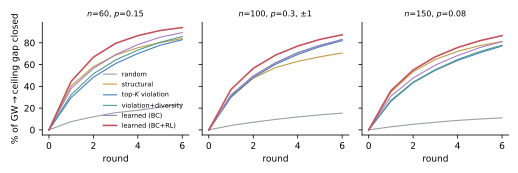

Introduction
The moment–sum-of-squares (moment-SOS) hierarchy of Lasserre and Parrilo [1][2] turns polynomial optimisation into a sequence of semidefinite programs (SDPs) of increasing order $d$, whose values converge monotonically to the global minimum, often in finitely many steps [3]. Its practical weakness is the granularity of that sequence. The order-$d$ moment matrix has size $\binom{n+d}{d}=O(n^d)$, so for most problems of interest even the step from order $1$ to order $2$ is out of reach — and nothing lies in between. Structure-exploiting variants, correlative [4][5] and term sparsity [6], fill the gap with hand-designed rules.
This article studies the gap as a path. Which sub-bases $\mathcal B$ with $\mathcal B_1\subseteq\mathcal B\subseteq\mathcal B_2$ should one pay for? Every such $\mathcal B$ is a valid relaxation, so growing the basis one monomial at a time — a walk — is an anytime algorithm whose bound improves monotonically. The question is the order of growth.
For MAX-CUT we can answer it exactly, and the answer turns the walk into something familiar: a cutting-plane method in basis space. We then use that structure to build a scalable engine and to train a small policy that picks cuts.
Contributions.
- Exact structure of the walk for MAX-CUT. The walk relaxation decouples by parity; a triangle of pair monomials is the four triangle inequalities; a basis whose pair graph is a forest gains nothing, and a triangle cactus gains exactly its triangle cuts; this explains why one-step greedy selection is blind and why triangles are the right macro-actions; and an odd cycle $C_m$ is certified exactly by a triangulation with $2m-3$ instead of $\binom m2$ monomials. This connects the hierarchy to the classical SDP + metric-polytope approach to MAX-CUT [7][8].
- A scalable learned walk. Batches of triangle cuts on top of the $n$-dimensional Goemans–Williamson cone, with an exact all-triples separation oracle, and a small policy trained by behaviour cloning and REINFORCE on tiny random graphs only.
- Evaluation. Each theorem is checked numerically; the policy is compared with random, structural, maximum-violation and diversity-aware selectors on random graphs up to $n=150$ and deployed zero-shot on Gset instances with $800$–$1000$ vertices, including a triangle-free torus.
We are explicit about what is and is not claimed: the theory is for Boolean quadratic problems; the learned policy's gain over the strongest hand-designed selector is modest; and at Gset scale the interior-point solve, not the selection rule, is the bottleneck.
Related Work
Hierarchies and sparsity. Lasserre [1] and Parrilo [2] introduced the hierarchy; Laurent [9][10] surveys it and compares it with Sherali–Adams and Lovász–Schrijver for $0/1$ problems. Sparse variants exploit correlative [4][5] or term sparsity [6] through chordal extensions [11]. Our walk is an instance-adaptive, anytime counterpart, and the exact-structure theorem below makes the link to chordal structure precise through the line graph of the basis graph.
MAX-CUT relaxations. The Goemans–Williamson (GW) SDP [12], its strengthening with triangle and odd-cycle inequalities [13][14], and the SDP+metric branch-and-bound solver BiqMac [7] are the classical strong bounds; Anjos and Wolkowicz [8] study a second lifting. We show these cuts are literally moment-matrix blocks.
Scalable SDP. Spectral bundle methods [15] (which also introduced the Gset instances) and low-rank factorisations [16] scale GW but do not directly give the certified bound a growing basis needs; we use an interior-point solver [17] and report its scaling limit honestly.
Learning to cut. Learning cut selection for MILP [18][19] and the theory of cut selection [20] are closest in spirit; see [21] for a survey and [22] for RL over graphs. To our knowledge, learned selection of moment-matrix bases — equivalently of SDP cuts with an SOS certificate — has not been studied.
The Walk: Partial-Basis Relaxations
Consider $\rho=\min_{\mathbf x\in\mathbf K}f(\mathbf x)$ with $\mathbf K=\{g_i\ge0\}$. Let $\rho_d$ be the order-$d$ moment bound and $\mathcal V_d$ the monomials of degree $\le d$. For a finite set of monomials $\mathcal B$ with $\mathcal V_d\subseteq\mathcal B\subseteq\mathcal V_{d+1}$, define $\rho(\mathcal B)$ as the minimum of $\mathcal L_{\mathbf y}(f)$ over pseudo-moments $\mathbf y$ with $y_0=1$, $M_{\mathcal B}(\mathbf y)\succeq0$ and $M_{\mathcal B_i}(g_i\mathbf y)\succeq0$, where $M_{\mathcal B}$ is the moment matrix restricted to rows and columns in $\mathcal B$.
Proposition (Sandwich). $\rho_d\le\rho(\mathcal B)\le\rho(\mathcal B')\le\rho_{d+1}\le\rho$ for $\mathcal V_d\subseteq\mathcal B\subseteq\mathcal B'\subseteq\mathcal V_{d+1}$.
Why. A principal submatrix of a PSD matrix is PSD, so the constraints for $\mathcal B$ are implied by those for $\mathcal B'$; every feasible point of the larger relaxation is feasible for the smaller.
So $\rho(\mathcal B)$ is an anytime lower bound that any single added monomial can improve, and its SOS dual is a certificate that uses only squares of polynomials supported on $\mathcal B$. Choosing the order of growth is a sequential decision problem: state $=\mathcal B$, action $=$ a monomial (or group of monomials) in $\mathcal V_{d+1}\setminus\mathcal B$, deterministic transitions, and reward $r(\mathcal B,a)=\rho(\mathcal B\cup\{a\})-\rho(\mathcal B)-\lambda$ with a compute penalty $\lambda$; the return telescopes to the total bound improvement.
Our first experiments used a policy over single monomials and found that the marginal reward is usually exactly zero. The next section explains why, and what the right action space is.
Structure of the Walk for MAX-CUT
We specialise to the problem where the walk can be analysed exactly, $$\rho^\star=\min_{x\in\{\pm1\}^n}\ \sum_{i\lt j}W_{ij}\,x_ix_j ,$$ with $W$ symmetric and zero on the diagonal. This is MAX-CUT: a cut has value $\tfrac12(\sum_{i\lt j}W_{ij}-\sum_{i\lt j}W_{ij}x_ix_j)$, so a lower bound $\rho$ on the minimum is an upper bound $\tfrac12(\sum_{i\lt j}W_{ij}-\rho)$ on the maximum cut.
Modulo the Boolean ideal $\langle x_i^2-1\rangle$ every monomial is a square-free $x_S$, with $x_Sx_T=x_{S\triangle T}$. Write $Y_{ij}=\mathcal L_{\mathbf y}(x_ix_j)$. For a set $P$ of pair monomials take the basis $\mathcal B(P)=\{1\}\cup\{x_i\}\cup\{x_ax_b:ab\in P\}$ and write $\rho(P)$ for its walk relaxation. Then $\rho(\emptyset)$ is the GW bound [12] and $\rho(\binom{[n]}{2})=\rho_2$ is the order-2 Lasserre bound, so $$\rho(\emptyset)\le\rho(P)\le\rho_2\le\rho^\star\quad\text{for every }P.$$ We call $H_P=([n],P)$ the pair graph.
Parity decoupling
Proposition (Parity decoupling). $\rho(P)$ is the optimal value of $\min\langle W,Y\rangle$ subject to $Y\succeq0$, $\operatorname{diag}Y=\mathbf 1$, and $$N(Y,z)=\begin{bmatrix}1&\mathbf y_P^\top\\ \mathbf y_P&C(Y,z)\end{bmatrix}\succeq0,$$ where $(\mathbf y_P)_{ab}=Y_{ab}$, $C_{ab,ab}=1$, $C_{ab,cd}=Y_{xy}$ if the pairs share one index and $\{x,y\}=\{a,b\}\triangle\{c,d\}$, and $C_{ab,cd}=z_{abcd}$ is a free variable for disjoint pairs.
Why. Conjugating a feasible moment matrix by $D=\operatorname{diag}((-1)^{|S|})$ flips the sign of the odd moments without changing the objective, which only involves $|S|=2$. Averaging the two gives a feasible point of equal value whose odd moments vanish, so its moment matrix is block diagonal in the parity of the row degree: the odd rows $\{x_i\}$ give $Y$, the even rows $\{1\}\cup\{x_ax_b\}$ give $N$.
The walk therefore never needs the $(1+n+|P|)$-dimensional cone of the naïve formulation — only an $n$-dimensional cone and a $(1+|P|)$-dimensional one.
A triangle is four linear inequalities
Lemma (Triangle block). Let $ij,ik,jk\in P$. The principal submatrix of $N$ on the rows $1,\ x_ix_j,\ x_ix_k,\ x_jx_k$ is $$\begin{bmatrix}1&a&b&c\\a&1&c&b\\b&c&1&a\\c&b&a&1\end{bmatrix},\qquad a=Y_{ij},\ b=Y_{ik},\ c=Y_{jk},$$ with eigenvalues $1+a+b+c,\ 1+a-b-c,\ 1-a+b-c,\ 1-a-b+c$. It is PSD iff $(a,b,c)$ satisfies the four triangle inequalities, the facets of the metric polytope [14].
Why. The matrix is the group matrix of $\mathbb Z_2^2$; the Hadamard matrix diagonalises it. Dually, the inequality $1+\sigma_1a+\sigma_2b+\sigma_3c\ge0$ is certified by the square $\tfrac14(1+\sigma_1x_ix_j+\sigma_2x_ix_k+\sigma_3x_jx_k)^2$: a triangle is exactly the three monomials an SOS certificate needs to contain this square.
Try it. Move $(a,b,c)=(Y_{ij},Y_{ik},Y_{jk})$ and watch the four eigenvalues. The GW optimum for a unit-weight triangle sits at $(-\tfrac12,-\tfrac12,-\tfrac12)$, which violates a triangle inequality; the cuts push it to the exact value $-1$.
What a basis graph buys: forests, cacti and cycles
Let $\rho_{\rm cut}(\mathcal T)$ be the value of the cut relaxation $\{Y\succeq0,\operatorname{diag}Y=\mathbf1\}$ plus the four triangle inequalities of every triple in a set $\mathcal T$, and $\mathcal T(P)$ the triangles of $H_P$. By the Lemma, $\rho(P)\ge\rho_{\rm cut}(\mathcal T(P))$.
Theorem 1 (Exact structure).
(a) If $H_P$ is a forest then $\rho(P)=\rho(\emptyset)$.
(b) If every block (biconnected component) of $H_P$ is an edge or a triangle — a triangle cactus — then $\rho(P)=\rho_{\rm cut}(\mathcal T(P))$.
(c) In general $\rho(P)\ge\rho_{\rm cut}(\mathcal T(P))$, and the inequality can be strict.
Proof idea. By a Schur complement, $N\succeq0$ iff $\tilde P=C-\mathbf y_P\mathbf y_P^\top\succeq0$. Its specified entries live on the line graph of $H_P$; for a forest or a triangle cactus this line graph is chordal, with maximal cliques the vertex stars and the triangles. By the theorem of Grone et al. [23], a partial matrix with chordal pattern is PSD-completable iff every maximal-clique block is PSD. Star blocks are automatically PSD (a Schur complement of $Y$), and a triangle block is PSD iff the four triangle inequalities hold. For (c), $C_5$ plus one chord reaches the exact value $-3$, strictly better than the single triangle.
Toggle pair monomials below and see which regime your basis is in.
Corollary (Plateaus and non-myopia). If $P$ is a forest, every single pair $e$ with $P\cup\{e\}$ a forest has zero marginal gain. For a triangle $\{e_1,e_2,e_3\}$ the gains of $\{e_1\}$ and $\{e_1,e_2\}$ are $0$, while adding $e_3$ gives a strictly positive gain exactly when no optimum of the current relaxation satisfies the triangle inequalities. The marginal-gain function is not submodular, and a one-step greedy rule on pair monomials is blind (every candidate ties at zero) at every state whose pair graph is a forest.
This formalises the empirical failure of one-step greedy selection: the natural action is the triangle, a macro-action of three monomials, and when triangles are glued as a cactus the relaxation is exactly the corresponding cutting-plane relaxation.
Proposition (Progress certificate). $\rho_{\rm cut}(\mathcal T\cup\{\tau\})>\rho_{\rm cut}(\mathcal T)$ iff every optimal $Y$ of the current relaxation violates a triangle inequality of $\tau$. In particular, violation at the computed solution is necessary for progress, and sufficient when the optimum is unique.
This tells us where to look: only triples violated by the current solution can help.
Theorem 2 (Odd cycles are certified by a triangulation). Let $C=(v_1,\dots,v_m)$ be an odd signed cycle and let $P$ contain its edges and the chords of a triangulation of the polygon $C$ ($m$ sides, $m-3$ chords, $m-2$ triangles). Then every feasible $Y$ satisfies $\sum_{e\in C}\varepsilon_eY_e\ge-(m-2)$. Consequently, for the odd cycle graph $C_m$ with unit weights, $\rho(P)=-(m-2)=\rho^\star$ with $2m-3$ monomials, whereas the GW bound is $-m\cos(\pi/m)$ and the order-2 relaxation uses $\binom m2$ pair monomials.
Proof idea. Induct on $m$ by cutting off an ear $(u,v,w)$: the triangle inequality for the right sign pattern lets us replace the two ear edges by the chord, giving a signed polygon with $m-1$ sides and the same parity. The base case $m=3$ is a triangle inequality; the cut that leaves a single edge uncut attains the bound.
Learning the Walk
Macro-action MDP. Rewards are non-zero only when a whole triangle is present, so the action is a triple $\{i,j,k\}$, which adds the three monomials $x_ix_j,x_ix_k,x_jx_k$. When triangles are glued as a cactus the relaxation is exactly the cut relaxation $\rho_{\rm cut}$ — one $n$-dimensional cone plus four linear inequalities per triangle, instead of an extra cone of dimension $3|\mathcal T|$. In general $\rho_{\rm cut}(\mathcal T)\le\rho(P(\mathcal T))$ is a valid but weaker relaxation; at scale we always use $\rho_{\rm cut}$. A round adds a batch of $K$ triples and re-solves once; a walk is $R$ rounds. Inactive cuts (zero dual in all four inequalities) are discarded after every solve, for all methods.
Candidates by exact separation. There are $\binom n3$ triples, but the progress certificate says only violated ones can help. We compute the violation $v(\tau)=\max_{\sigma}\{-1-\sigma\cdot(Y^\star_{ij},Y^\star_{ik},Y^\star_{jk})\}$ of all triples with blocked tensor operations ($O(n^3)$, 9 s for $n=800$ on one machine) and keep the $M$ most violated as the candidate pool. This also covers triples containing non-edges, so the method applies to triangle-free graphs.
Policy. A shared MLP $s_\theta(\tau)$ scores candidates from size-agnostic features: normalised violation and its rank in the pool; the number of edges of $G$ among the three pairs; the alignment of the violated cut with the objective; summed edge weight; mean $|Y^\star|$ on the three pairs; normalised degrees; the number of already-active cuts touching the pairs; and the round index. A batch is built sequentially by sampling from $\mathrm{softmax}(s_\theta)$ after each pick, with two within-round overlap features (how many picked triples share a pair, resp. a vertex, with $\tau$) updated after every pick, which lets the policy learn diversity. At test time the batch is built greedily.
Training. We first behaviour-clone, on each training graph, the better of two hand-designed selectors (struct and nms, below), then fine-tune with REINFORCE [24]: four rollouts per graph, return $=(\rho_{\rm final}-\rho_{\rm ref})/(\rho_{\rm ref}-\rho_{\rm GW})$ with $\rho_{\rm ref}$ the better of the two selectors on that graph, and the mean over the four rollouts as baseline. Training uses only random graphs with $30\le n\le80$, edge probability log-uniform in $[0.04,0.5]$, unit or $\pm1$ weights, $K=n$ and $R=4$ rounds — behaviour cloning on $160$ graphs, then $45$ REINFORCE iterations of $14$ graphs, about $25$ minutes on 14 cores.
Baselines. random: $K$ uniformly random triples. struct: triples ranked by the number of edges of $G$ they contain (the structural triangle heuristic, extended to non-edges). top-K: the $K$ most violated triples, the standard cutting-plane rule. nms: most-violated triples subject to no two sharing a pair (“non-maximum suppression”), a common diversity heuristic. All methods use identical solves, cut dropping and budget $(K,R)$.
Experiments
All SDPs are solved with MOSEK 11 [17] (Fusion API, native symmetric cones; the same relaxations through a modelling layer that adds $O(n^2)$ symmetry rows were more than $300\times$ slower at $n=200$). Reported bounds are dual objective values, certified up to the solver tolerance $10^{-7}$.
Validating the theory
- Parity decoupling. The decoupled engine and the naïve $(1+n+|P|)$-cone engine agree to $3\times10^{-7}$.
- Forests and cacti. Over 25 random weighted instances ($n=10$) with random forests, $\max|\rho(P)-\rho(\emptyset)|=5\times10^{-6}$; for 25 random triangle cacti, $\max|\rho(P)-\rho_{\rm cut}(\mathcal T(P))|=3\times10^{-6}$, while the cuts themselves improve the GW bound by $0.14$ on average — the equality is not vacuous.
- General pair graphs. For 40 random sets of triples ($n=9$), $\rho(P)\ge\rho_{\rm cut}(\mathcal T(P))$ always, and the inequality is strict in $52\%$ of cases: cycles of length $\ge4$ in $H_P$ contribute. The sharpest example: $C_5$ plus one chord reaches the exact value $-3$ with $6$ monomials, whereas the single triangle's cuts give only $-3.83$.
- Odd cycles. For every odd $m\le21$ the fan triangulation ($2m-3$ monomials) attains exactly $-(m-2)$ (error $<10^{-8}$); the full order-2 relaxation needs $\binom m2$ monomials ($210$ vs. $39$ at $m=21$). Exhaustive search over chord sets shows the triangulation count is not minimal: $C_5$, $C_7$, $C_9$ reach the exact value with $1$, $2$, $3$ chords, i.e. $\lceil(m-3)/2\rceil$ chords, and never with one fewer. We leave a proof to future work.
- Ceilings. On $12$ small random graphs ($n\in\{10,12,14\}$), the exact order-2 bound equals the brute-force optimum to $2\times10^{-6}$ and the full triangle-metric bound to $1.3\times10^{-4}$, while GW is $0.004$–$1.7$ below. In this regime the ceiling is reached with triangle cuts alone, and the walk's task is purely how quickly the cuts are found.
| $C_5$ | $C_7$ | $C_9$ | |
|---|---|---|---|
| exact $\rho^\star$ | $-3$ | $-5$ | $-7$ |
| GW $-m\cos(\pi/m)$ | $-4.045$ | $-6.307$ | $-8.457$ |
| $H=C_m$ (no chord) | $-3.944$ | $-6.271$ | – |
| best, $k=1$ chord | $-3.000$ | $-5.944$ | – |
| best, $k=2$ chords | – | $-5.000$ | $-7.944$ |
| best, $k=3$ chords | – | – | $-7.000$ |
| triangulation ($2m-3$) | $-3$ | $-5$ | $-7$ |
Odd cycles: bound of the walk relaxation $\rho(P)$ for the best chord sets (exhaustive search).
Learned versus hand-designed cut selection on random graphs
Protocol. Test graphs are Erdős–Rényi graphs with unit or random $\pm1$ weights, $12$ per setting. The policy is trained only on $30\le n\le80$ and evaluated with $K=n$ cuts per round for $R=6$ rounds (trained for $R=4$), so $n=100,150$ test generalisation in size and the extra rounds test depth. The reference value of each graph is the ceiling reached after $25$ rounds of the violation+diversity selector, and the metric is the percentage of the gap $\rho_{\rm GW}\to\rho_{\rm ceil}$ closed after $R$ rounds.
| Setting | random | struct | top-$K$ | nms | BC | BC+RL | BC+RL − best base |
|---|---|---|---|---|---|---|---|
| $n=40,\ p=0.3$ | 32.0 | 84.2 | 87.3 | 90.1 | 90.8 | 94.8 | +4.4 ± 0.6 (12/12) |
| $n=60,\ p=0.15$ | 23.6 | 83.9 | 82.8 | 85.7 | 89.4 | 94.0 | +7.6 ± 0.9 (12/12) |
| $n=60,\ p=0.4,\ \pm1$ | 22.9 | 68.0 | 82.5 | 85.2 | 85.4 | 90.2 | +5.0 ± 0.3 (12/12) |
| $n=100,\ p=0.1$ | 14.6 | 81.7 | 75.7 | 77.6 | 81.7 | 87.6 | +6.0 ± 0.5 (12/12) |
| $n=100,\ p=0.3,\ \pm1$ | 15.4 | 70.7 | 82.0 | 83.0 | 83.1 | 87.4 | +4.4 ± 0.2 (12/12) |
| $n=150,\ p=0.08$ | 11.0 | 81.2 | 77.1 | 77.8 | 81.2 | 86.6 | +5.4 ± 0.3 (12/12) |
Percentage of the GW→ceiling gap closed after $R=6$ rounds of $K=n$ triangle cuts (mean over $12$ graphs; bold: best). Last column: paired per-graph difference between the learned policy and the better of struct and nms (mean ± s.e.; wins). Settings with $n\ge100$ are zero-shot in size.

The learned policy is the best method in every setting, ahead of the best hand-designed selector on each graph by $4.4$ to $7.6$ points, and winning on all $72$ graphs. The baselines are informative on their own. Random selection closes only $11$–$32\%$, confirming that which triples matter. The structural rule is strongest on sparse unit-weight graphs ($81$–$84\%$) but weak when weights have mixed signs ($68$–$71\%$), where violation-based rules win; adding diversity to the violation rule (nms) is consistently better than top-$K$. The learned policy combines both sources of information and keeps its advantage at sizes it was never trained on.
Two ablations isolate what is responsible. Behaviour cloning alone essentially reproduces the better of its two teachers (within $0.7$ points of the best baseline mean in five of six settings), so the extra $4$–$6$ points come from the REINFORCE stage. And a first version trained only against the violation selector ($n\le60$, $p\ge0.1$) gained just $1.5$–$3.0$ points over nms and was below the structural rule on sparse graphs ($79.9$ vs. $81.7$ at $n=100$) — which is why the training distribution and the reference were changed.
Zero-shot deployment on Gset
We deploy the policy trained on $n\le80$ graphs, unchanged, on four Gset instances: G1 (dense, unit weights, $19{,}176$ edges), G14 (union of planar-like graphs, $4{,}694$ edges), G43 ($n=1000$, $9{,}990$ edges) and G11 (a $\pm1$ toroidal grid with no triangles). Each round adds $K=500$ cuts from a pool of $M=12{,}000$ most-violated triples; exact separation over all $\approx8.5\times10^7$ triples takes $9$ s at $n=800$, and a full round takes $7$–$77$ s depending on the number of active cuts (single machine, 14 cores). Because G11 has no triangles, an edge-restricted walk could not run on it at all; the all-triples oracle treats it like any other instance.
We report the MAX-CUT upper bound $\mathrm{UB}=\tfrac12(\sum_{i\lt j}W_{ij}-\rho)$ and, for context, the cut found by GW rounding plus one-flip local search (our own heuristic, not the best-known value, so the gap is an overestimate of the true gap).
| $n$ | $R$ | GW UB | cut | struct | top-$K$ | nms | learned | gap closed | |
|---|---|---|---|---|---|---|---|---|---|
| G1 | 800 | 8 | 12083.2 | 11570 | 12020.2 | 12009.5 | 12009.2 | 12010.1 | 14.2% |
| G14 | 800 | 8 | 3191.6 | 3032 | 3145.8 | 3151.6 | 3151.6 | 3143.5 | 30.1% |
| G43 | 1000 | 8 | 7032.2 | 6600 | 6974.5 | 6970.1 | 6970.0 | 6967.9 | 14.9% |
| G11 | 800 | 8 | 629.2 | 542 | 571.5 | 593.4 | 585.8 | 570.6 | 67.2% |
Gset, $K=500$ cuts per round, $R=8$ rounds (at most $4{,}000$ active cuts). UB: MAX-CUT upper bound after $R$ rounds (lower is tighter; bold: best). “cut”: GW rounding + local search. Last column: fraction of the gap GW UB − cut closed by the learned policy.
Reading the table.
- With identical budgets the learned policy gives the tightest bound on G14, G43 and the triangle-free torus G11, and is within one unit of the best (nms) on G1 ($12010.1$ vs. $12009.2$). At $R=3$ it was best on G1, G14 and G43 and behind the structural rule on G11, so the ranking on G11 changes with depth.
- The policy was trained only on $n\le80$ random graphs; G11, a $\pm1$ torus with no triangles, is far from that distribution.
- The methods differ most where structure matters: on G14 and G11 the structural rule is far ahead of the violation-based selectors ($28.7\%$ vs. $25.0\%$ and $66.2\%$ vs. $41.0$–$49.7\%$ of the gap), while on the dense G1 the order reverses. The learned policy tracks the better of the two in every case.
- Random selection is useless at scale: on G14 it closes $0.1\%$ of the gap after three rounds.
- In absolute terms the gaps remain large — $14$–$67\%$ closed with at most $4{,}000$ cuts — and reaching the metric-polytope bound needs far more cuts than an interior-point master problem can hold ($>9$ GB and $350$ s per solve at $5{,}000$ cuts on G14). Making the walk competitive at that scale needs a different master solver, not a different selection rule.
Discussion
What the walk is. For MAX-CUT the walk between orders $1$ and $2$ of the hierarchy is, to a precise extent, a cutting-plane method: pair monomials appear in groups of three that are four linear inequalities each; forests carry no information; triangle cacti are exactly equal to their cuts; and cycles of length $\ge4$ in the basis graph give extra strength that cuts alone do not capture. This reframes “learning which monomials to add” as “learning which cuts to add”, links the SOS hierarchy to the SDP+metric methods of Rendl et al. [7], and tells us what a one-step greedy rule cannot see.
What is learned. A small MLP over size-agnostic features, trained for about $20$ minutes on graphs with at most $80$ vertices, selects cuts better than random, structural, violation and diversity-aware selectors on random graphs up to $150$ vertices and on three of four Gset instances (a near-tie on the fourth). The gain over the best hand-designed baseline is $4$–$8$ points of gap closed after six rounds on random graphs, and a small but consistent edge at Gset scale ($-0.2$ to $+1.4$ points after $8$ rounds, the negative value being the near-tie on G1).
Limitations.
- The theory is for Boolean quadratic problems. For general polynomial problems the parity and triangle structure is replaced by localizing and moment-matrix structure, and the right macro-action is not known.
- Theorem 1(b) is exact only for triangle cacti; the scalable engine solves the cut relaxation, which is weaker than the exact walk when triangles share edges. We quantified this on small instances but did not scale the exact walk.
- The conjectured minimal chord count $\lceil(m-3)/2\rceil$ for odd cycles is unproved.
- At Gset scale the bottleneck is the interior-point master problem, so absolute bound improvements are small and we do not claim state-of-the-art bounds. First-order or bundle solvers with cut management [15] are the natural next step, and the learned selector is solver-agnostic.
- Training cost (about $20$ minutes on $14$ cores) and the choice of reference selectors for the REINFORCE baseline affect the outcome: a first version trained against violation-only selectors fell below the structural rule on sparse graphs.
- Only one problem class and a single batch size per round were studied.
Outlook
Combining the learned selector with a scalable cut-aware solver, extending the characterisation to the next layer of the hierarchy (pentagonal and hypermetric inequalities correspond to larger basis cliques), and proving the cycle conjecture are the most promising continuations.